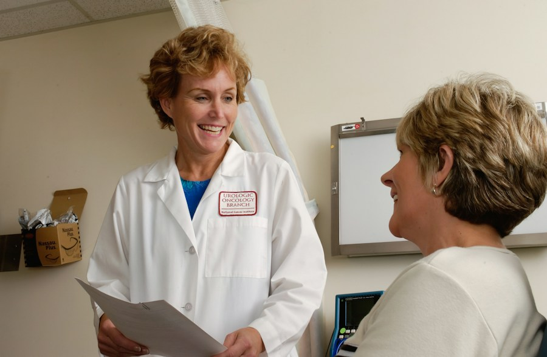
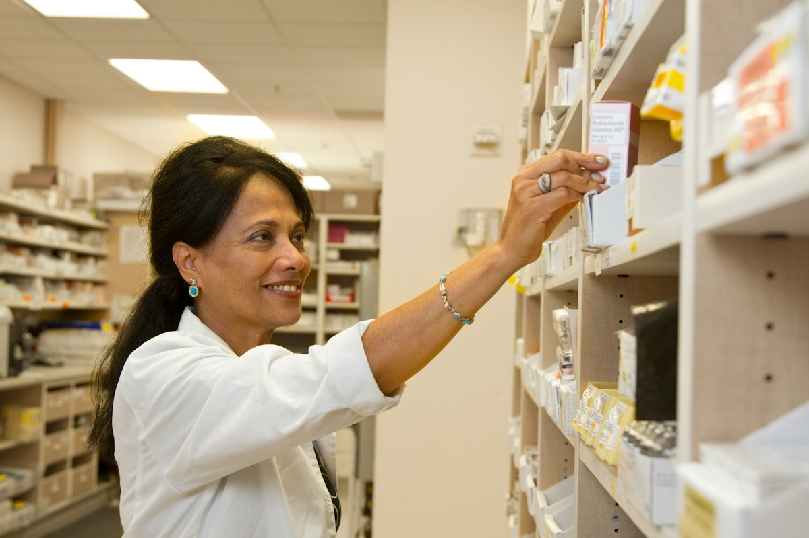

NHS Trust and Welsh Health Boards Adult Diabetes services are invited to express interest in a time-limited Hybrid Closed Loop (HCL) implementation support Programme funded by Insulet and delivered by Interface Clinical Services, an IQVIA business (the ‘Programme’).
Expression of Interest (EOI)
Insulet-Led Service:
Onboarding and
Optimisation
Programme
for Omnipod® 5
Automated
Insulin Delivery System
Create capacity. Support equitable HCL implementation. Build a sustainable local model.
About the Programme
The Programme is intended to provide additional short-term clinical capacity and implementation support to help participating Trusts address local barriers to HCL delivery in line with NICE TA943.
Support can be delivered through hospital, community, or hybrid models, depending on local need, governance requirements, and pathway design. The Programme is intended to complement existing NHS diabetes services and support sustainable local delivery.
INS-OHS-10-2026-00028 V2.0
No fee to participating
NHS organisations
No fee will be charged to participating Trusts for agreed Programme activities.
Participation creates no obligation to purchase, use, prescribe, recommend or favour Omnipod 5 or any other Insulet product. Patient eligibility, treatment decisions, device selection and procurement remain the responsibility of the NHS organisation and treating clinical team.
The Programme is provided as implementation support and is not contingent upon minimum usage, prescribing volumes, procurement commitments, exclusivity arrangements, or future purchasing decisions.
Why now?
NICE published TA943 in December 2023, with recommended HCL technologies being introduced through a phased five-year implementation period.
Many diabetes services continue to face workforce, pathway, and operational challenges that may affect the pace and consistency of HCL implementation and patient onboarding into HCL technologies.
The Programme is designed to help participating Trusts:
01
Create additional capacity for HCL patient onboarding and early follow-up.
02
Support progression of eligible patient cohorts through agreed onboarding and follow-up processes.
03
Help alleviate pressure on specialist diabetes team capacity.
04
Support equitable access.
05
Strengthen local pathways and operational processes.
06
Generate practical learning to support sustainable future delivery.
What support is available?
The final scope will be agreed with each selected Trust, and aligned with its existing HCL pathway, clinical governance arrangements, and local requirements.
Support may include:
Mobilisation and pathway alignment activities.
Pharmacist-led group Omnipod 5 onboarding.
Face-to-face consultations.
Structured early follow-up and optimisation.
Patient education and safety-netting.
Documentation within Trust clinical systems.
Structured handover to the NHS diabetes team.
Participating Trusts may also receive support to identify implementation barriers, evaluate agreed service measures, and capture learning to support sustainable local delivery.
INS-OHS-10-2026-00028 V2.0
What could participation offerto your service?
Selected Trusts may benefit from:
Additional short-term clinical capacity to support an authorised HCL cohort.
Help to alleviate pressure on specialist diabetes team capacity.

Consistent onboarding and early follow-up within an agreed clinical framework.
Flexible delivery across hospital, community and, where needed, remote settings.
Implementation insight into local workflow, capacity and access barriers.
A planned handover designed to support sustainable NHS delivery.
The Programme is temporary and supplementary in nature and is not intended to replace commissioned NHS services, substitute for NHS staffing establishments or provide ongoing clinical delivery beyond the agreed Programme period.
Who should apply?
Expressions of interest are invited from NHS Trust Adult Diabetes services in England and Wales that:
Provide specialist type 1 diabetes and HCL care.
Are experiencing HCL implementation, capacity or access challenges.
Have, or can identify, an appropriate clinically authorised patient cohort.
Are committed to equitable implementation in line with NICE TA943.
Can nominate appropriate clinical, operational and information-governance leads.
Are willing to establish the necessary local governance arrangements.
Will participate in agreed evaluation and sustainability planning.
Selection will be based on objective criteria including service need, potential patient benefit, inequalities in access, implementation challenges, readiness and feasibility of sustainable delivery.
Selection will not be based on commercial potential, historical or anticipated levels of Omnipod 5 use, procurement preference or future purchasing commitments.
INS-OHS-10-2026-00028 V2.0

About Interface
Clinical Services
Interface Clinical Services, an IQVIA business, is the Programme delivery partner.
It provides NHS-facing clinical services through an established workforce of registered pharmacists and other healthcare professionals supported by clinical, operational, medical affairs and compliance oversight.
Interface Clinical Services clinicians are trained, competency assessed and experienced in delivering face-to-face and remote services within NHS clinical pathways, including pharmacist-led HCL onboarding and follow-up support.
Clinical independence and governance
The Programme will operate within a documented governance framework agreed with each selected Trust.
Eligibility, prioritisation, treatment decisions and ongoing clinical care remain the responsibility of the NHS clinical team.
The Programme does not form part of the Trust's device-selection or procurement process. Device selection must take place through the Trust's usual independent, patient-centred decision-making process before Programme-supported onboarding activity takes place.
Programme-supported Omnipod 5 onboarding and optimisation activities will be available only to patients who have already been assessed as eligible for HCL by their NHS clinical team and have independently selected Omnipod 5 through the Trust's usual care pathway.
Participation in the Programme will not influence local procurement processes. All procurement, contracting and purchasing decisions remain subject to the NHS organisation's established procurement policies and governance procedures.
Insulet's role as Programme funder and Interface Clinical Services' role as delivery partner will be clearly disclosed. Appropriate contracting, data-processing, information-governance and system-access arrangements will be completed with each selected Trust before service delivery begins. Reporting to Insulet will be limited to agreed, appropriately aggregated and non-identifiable Programme information.
INS-OHS-10-2026-00028 V2.0
Express your interest
If your Adult Diabetes Service is experiencing HCL implementation or capacity challenges and is committed to equitable, sustainable improvement, we welcome your expression of interest (EOI).
The EOI will ask for information about:
- Your current HCL pathway.
- Key capacity or implementation challenges.
- The patient cohort requiring support.
- Inequalities or variation you are seeking to address.
- Your preferred delivery model.
- Local leadership and governance readiness.
Closing date: 11th November 2026, 4pm.
Questions: InsuletLedService@insulet.com

Submit an expression of interest
Closing date: 11th November 2026, 4pm.